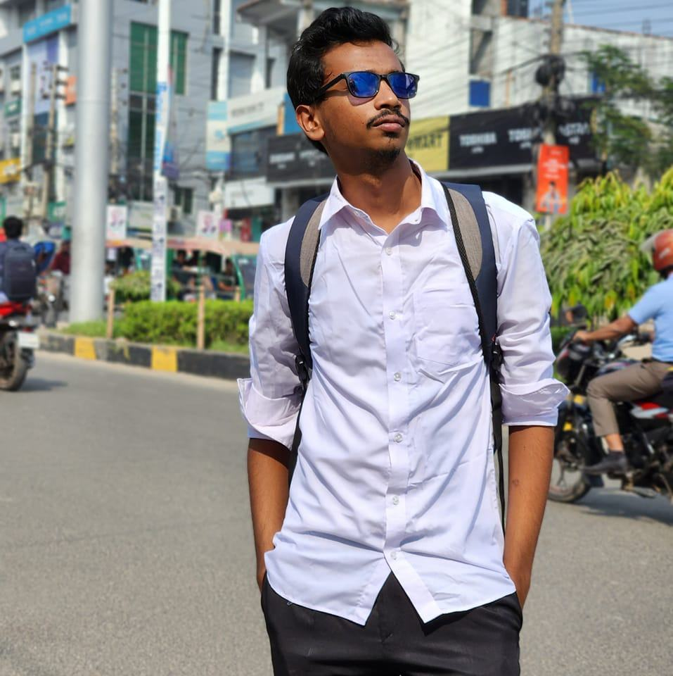
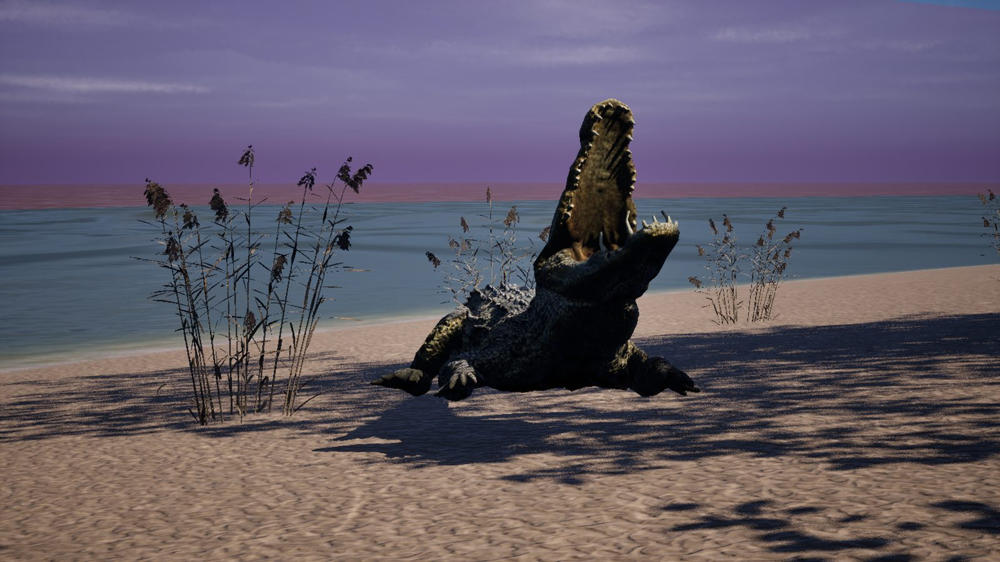
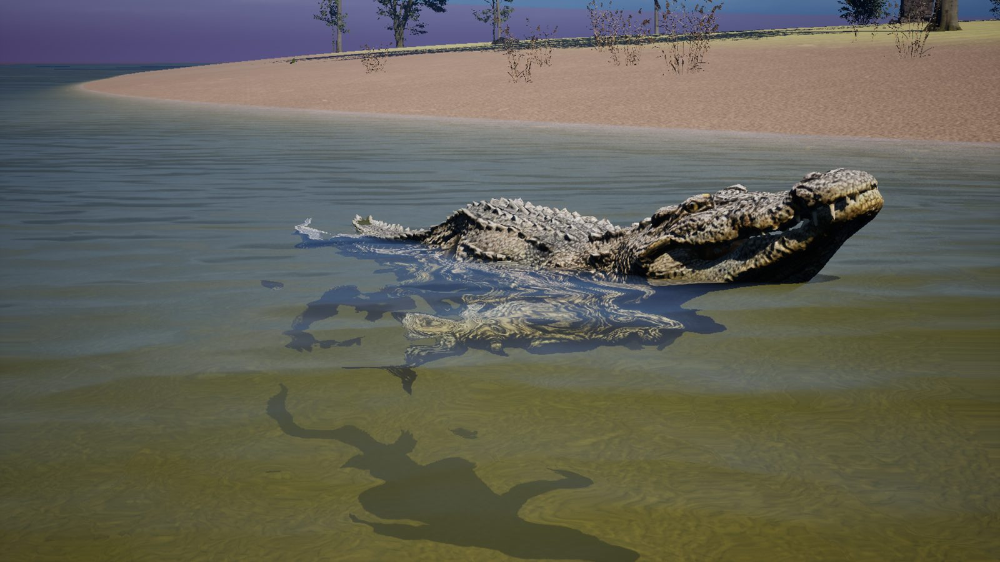
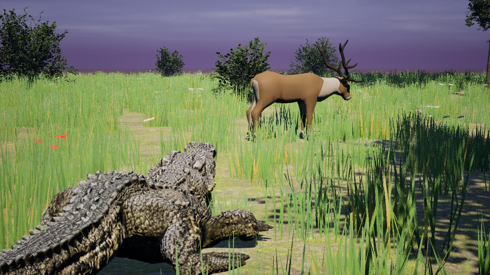
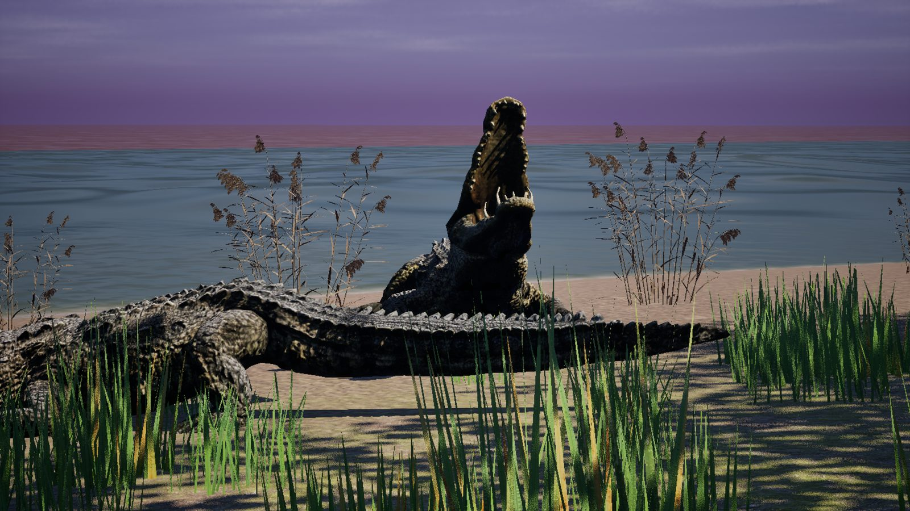
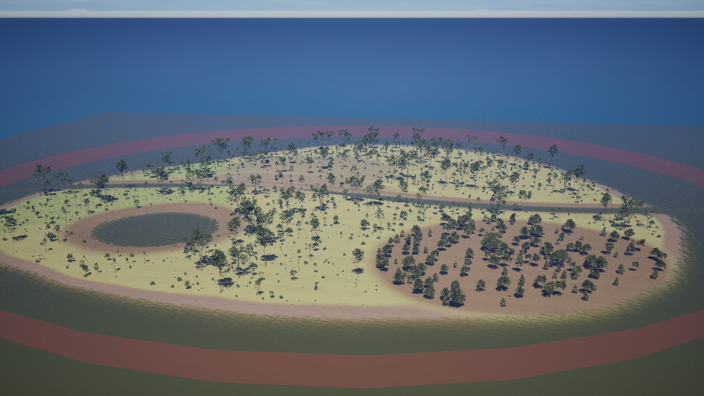
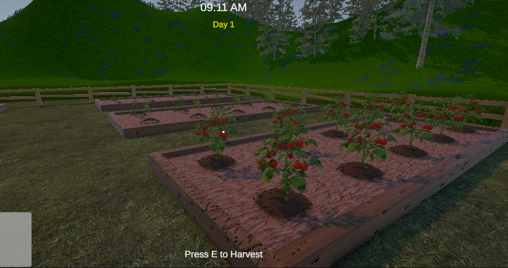
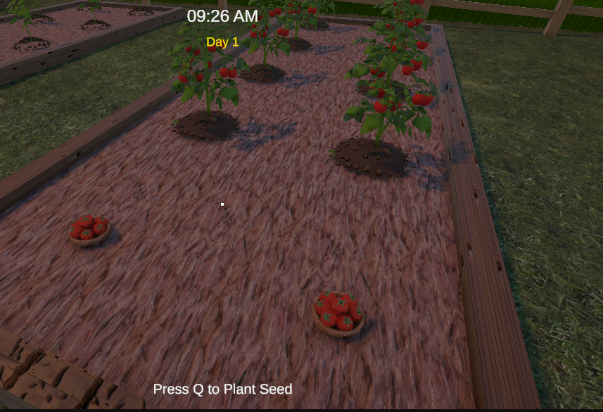
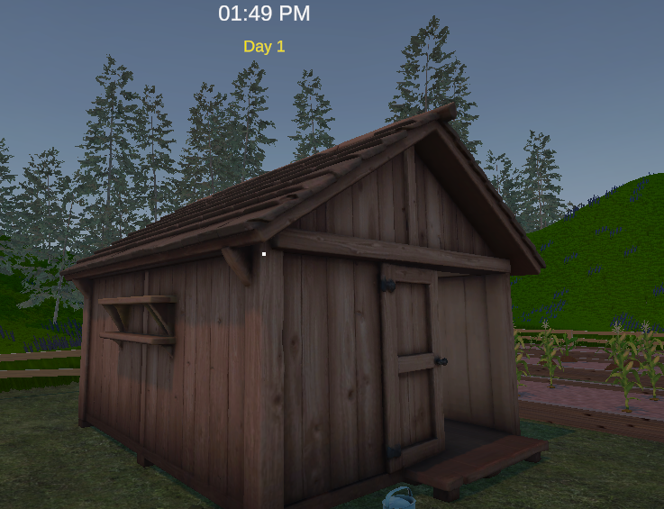

Unity & Unreal Engine Game Developer | C# | Blueprints | CSE Student

I'm a Computer Science and Engineering student with a strong focus on game development in Unity and Unreal Engine. I build complete, playable games from scratch, handling everything from gameplay systems and AI to networking, UI, animation and audio. My most recent project, Croc Royale, is a 4-player online crocodile battle royale built solo in Unreal Engine 5.8 with Blueprints and Epic Online Services. Before that I built Greenhand, a 3D first-person farming simulator in Unity 6. I am actively seeking part-time remote game development opportunities where I can contribute real value while continuing to grow as a developer.
A 4-player online crocodile battle royale built solo in Unreal Engine 5.8 with Blueprints, from rig to packaged online build in about 10 weeks (Aug–Oct 2026). Players host or join over Epic Online Services, hunt AI prey to grow, fight with five crocodile attacks and survive a shrinking zone on a 2 km map; the last croc alive wins.
Highlights: listen-server multiplayer with server-authoritative combat, RepNotify and multicast replication; a 29-bone crocodile rigged in Blender with 40+ animations generated by Python scripts; an island map generated from code (Python heightmap and layout, Unreal Python builder); and optimisation from a 966k to 14.5k triangle player mesh, reaching about 60 FPS on an Intel Arc A750.





A full 3D first-person farming simulator built solo in Unity 6 (URP). Features include a complete plant growth system with watering and fertilizing mechanics, 7 unlockable plant beds, 2 crop types, a customer queue and selling system, day/night cycle with sleep mechanics, tool upgrade system, NavMesh-based customer AI, and a full JSON save/load system.



| Degree | Institution | Year | Result |
|---|---|---|---|
| SSC (Science) | Navy Anchorage School & College, Khulna, Bangladesh | 2020 | GPA 5.00 |
| HSC (Science) | Navy Anchorage School & College, Khulna, Bangladesh | 2022 | GPA 5.00 |
| BSc in CSE | North Western University, Khulna, Bangladesh | 2028 (Expected) | Ongoing |
Email: hmhemel45@gmail.com
Phone: +8801710392967
Khulna, Bangladesh